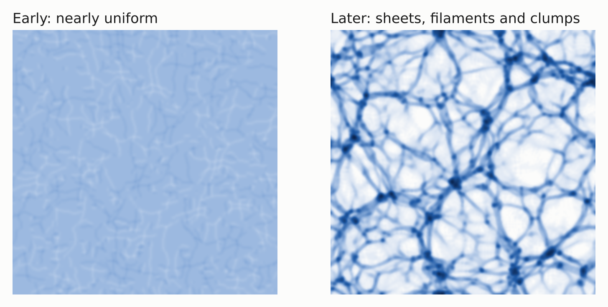

Cosmology · Cosmological Simulations
Cosmological Simulations
Simulations of cosmic structure, and the numerical methods that run them.
In brief
Many questions in cosmology cannot be answered with pen and paper. Gravity draws matter from a nearly smooth early Universe into a web of sheets, filaments and dense clumps (see the figure), and following that process in detail takes computer simulations. The densest clumps host galaxy clusters: the most massive objects held together by their own gravity.
Simulations connect theory with observation, but only if the two are compared like with like. A simulated galaxy cluster has to be "observed" the way a real one is before the two can be compared: for example, turned into a mock X-ray image, since the hot gas between a cluster's galaxies shines in X-rays.
The numerical methods inside a simulation matter too. A simulation advances in many small time steps, and each step is an approximation. With some methods, tiny errors in quantities that should be conserved, such as energy, pile up over millions of steps; symplectic methods keep them small. So the method decides how far the results can be trusted over long times.
Why it matters: surveys like Roman's will measure cosmic structure precisely, and simulations are how we predict what different cosmological models should look like. My work touches both sides: my first project compared mock observations of simulated clusters, and I have since developed new numerical methods (below).

New to this topic? The Glossary explains the terms in plain language; underlined terms link to it.
What I have done
Cosmological simulations are where I made my research debut, as a visiting undergraduate student at the Massachusetts Institute of Technology in 2019. Using the Mock-X framework, we studied how galaxy clusters are classified as dynamically relaxed. We examined nine commonly used morphological metrics in 54,000 synthetic X-ray images of clusters from the IllustrisTNG, BAHAMAS and MACSIS simulations, and found that relaxed subsets defined by different metrics agree poorly, so selecting "relaxed" clusters introduces significant selection effects (Cao et al. 2021).
During my PhD, I also developed ContEvol, a family of implicit numerical methods that only need to solve linear equations and are almost symplectic. They give continuous solutions, and they handle problems from orbits to the Schrödinger equation (Cao 2025; code).
Papers
First-author papers
- ContEvol formalism: numerical methods based on Hermite spline optimization
· DOI · arXiv:2405.05188 · ADS · Code - Studying galaxy cluster morphological metrics with Mock-X
· DOI · arXiv:2006.10752 · ADS · Talks and posters: SMURF, MIT, 2019
Coauthored papers
- Characterizing hydrostatic mass bias with Mock-X
· DOI · arXiv:2001.11508 · ADS
I gave feedback on early data products of the Mock-X framework, took part in discussions of relaxation criteria, and commented on the manuscript.
What comes next
ContCosmos: I have always wanted to return to cosmological simulations, including N-body simulations. Now that I know the statistics of large-scale structure much better, I can see more clearly what we can learn from them, and I plan to explore whether ContEvol can be a way to formulate them.
How this fits into my next five years: Research Directions.
Terms on this page (4)
- Cosmological simulation
- A computer calculation that follows matter (and sometimes gas and stars) under gravity from the early Universe to today. N-body simulations represent matter as many particles.
- Galaxy cluster
- A group of hundreds to thousands of galaxies bound by gravity, filled with gas at tens of millions of degrees that shines in X-rays. Clusters are the most massive gravitationally bound objects. A cluster is called relaxed when it has settled down since its last merger.
- Symplectic method
- A numerical method for following motion under forces such as gravity, built so that each time step respects the geometric (symplectic) structure of motion under such forces. One consequence is that "phase-space volume" (a combined measure of the spread in positions and velocities) is conserved. As a result, errors in conserved quantities such as energy stay small over very long runs instead of growing steadily. ContEvol, my family of numerical methods, is nearly symplectic.
- Zel'dovich approximation
- A simple model of how structure forms: each bit of matter keeps moving in a straight line in the direction set by the early ripples, so that matter piles up where paths cross. It captures how the cosmic web begins.